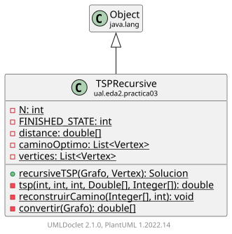

Class TSPRecursive
java.lang.Object
ual.eda2.practica03.TSPRecursive

Clase que implementa el algoritmo del TSP (Viajante de Comercio) utilizando programación
dinámica y memoización de forma recursiva. El algoritmo evalúa todos los posibles nodos de inicio
y regresa el camino óptimo y el costo mínimo.
-
Field Summary
FieldsModifier and TypeFieldDescriptionprivate static double[][]private static intprivate static int -
Constructor Summary
Constructors -
Method Summary
Modifier and TypeMethodDescriptionprivate static double[][]Convierte el grafo en una matriz de distancias.private static voidreconstruirCamino(Integer[][] prev, int source) Reconstruye el camino óptimo a partir de la tabla 'prev' luego de calcular los costos.static SolucionrecursiveTSP(Grafo grafo, Vertex startVertex) Resuelve el problema del TSP para el grafo dado utilizando programación dinámica recursiva, comenzando desde el vértice especificado.private static doubleMétodo recursivo que calcula el costo mínimo para completar el circuito desde el nodo actual usando programación dinámica y memoización.
-
Field Details
-
N
private static int N -
FINISHED_STATE
private static int FINISHED_STATE -
distance
private static double[][] distance -
caminoOptimo
-
vertices
-
-
Constructor Details
-
TSPRecursive
public TSPRecursive()
-
-
Method Details
-
recursiveTSP
Resuelve el problema del TSP para el grafo dado utilizando programación dinámica recursiva, comenzando desde el vértice especificado.- Parameters:
grafo- El grafo en el cual se ejecuta el algoritmo.startVertex- El vértice de inicio para el recorrido.- Returns:
- Un objeto Solucion que contiene la ruta óptima y su costo total.
-
tsp
Método recursivo que calcula el costo mínimo para completar el circuito desde el nodo actual usando programación dinámica y memoización.- Parameters:
i- El índice del nodo actual.state- Bitmask que indica los nodos visitados.start- Índice del nodo de inicio.memo- Tabla para memoización.prev- Tabla para la reconstrucción del camino óptimo.- Returns:
- Costo mínimo acumulado desde el nodo actual hasta regresar al nodo de inicio.
-
reconstruirCamino
Reconstruye el camino óptimo a partir de la tabla 'prev' luego de calcular los costos.- Parameters:
prev- Tabla con la información del siguiente nodo para cada subproblema.source- Índice del nodo de inicio.
-
convertir
Convierte el grafo en una matriz de distancias.- Parameters:
grafo- El grafo a convertir.- Returns:
- Una matriz de distancias donde cada elemento representa el peso entre dos nodos.
-